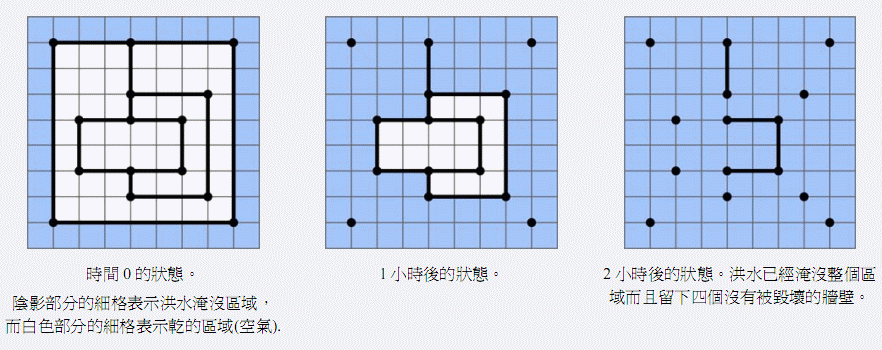

1964年的一场灾难性的洪水冲毁了萨格热布城。洪水袭来时许多建筑的墙被彻底冲毁。在这个题目中，给定了城市在洪水来袭前的简化模型，你的任务是确定洪水过后哪些墙没有被冲毁。
简化模型由平面上的N个点和W堵墙构成。每堵墙连接两个点，没有任何一堵墙通过其它点。模型具有如下性质：
• 不存在两堵墙相交或者重合的情况，但是两堵墙可以在端点相连；
• 每堵墙或者平行于坐标系的横轴，或者平行于坐标系的纵轴。
最开始，整个坐标平面都是干的。在零时刻，洪水将城市的外围淹没（城市的外围是指没有被墙围起来的区域）。一个小时之后，所有一边是水，一边是空气的墙在水的压力下都会倒塌。于是洪水又会吞没那些没有被完好的墙围住的区域。接下来又有一些墙面临一边是水一边是空气，将要被洪水冲毁的局面。又过了一个小时，这些墙也被冲毁了。这样的过程不断重复，直到洪水淹没整个城市。
下图给出了洪水侵袭过程的一个例子。

(图一)在零时刻，阴影的格子代表洪水区域，白色的格子代表干的区域（有空气的区域）。(图二) 一个小时之后的情况。(图三)两个小时之后，洪水淹没了整个城市，有4堵墙没有被冲毁而留了下来。
任务
给定N个点的坐标和连接这些点的W堵墙的描述，编程确定洪水过后，哪些墙会被留下来。